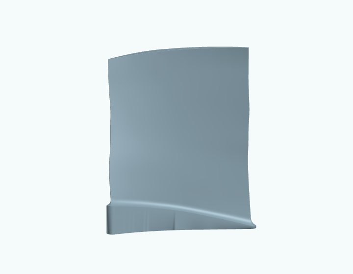
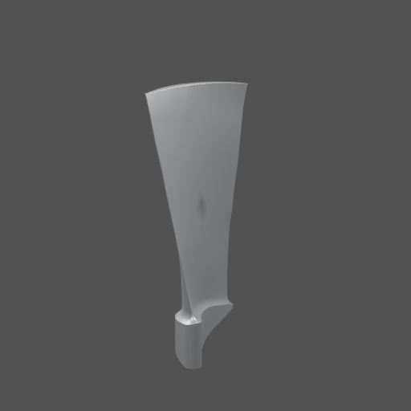
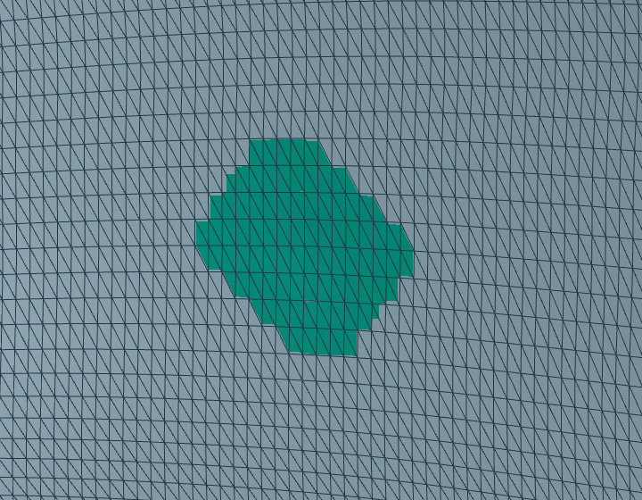
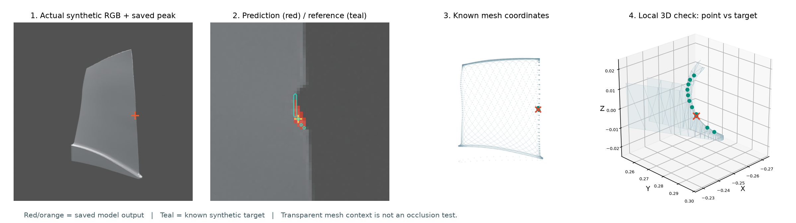

Where is the damage—and how has the shape changed?

RESEARCH PROPOSAL & WORKING DEMONSTRATION
Locate the change on the surface.
Estimate the changed shape.
Check whether it is right.
A photograph may show something suspicious. Our goal is to understand where the blade physically changed—and how its 3D shape changed.
Public synthetic examples · updated 23 September 2026

The research question, the actual outputs, and the work still ahead. Use the tabs or arrow keys to present.


Current diagnostic: two images, known cameras and lighting.
The output mesh can be rotated and downloaded.
Two-minute speaker notes · Explore the earlier evidence · Read the research plan
We use public 3D shapes and controlled synthetic damage so we can compare an estimate with the actual change.
The blade surface is stored as points connected by triangles. It gives us a known starting shape.
We add dents, change appearance, or combine both. The correct physical shape is known.

Predicted vertex movements create an estimated changed mesh. We measure where it is wrong.
68 controlled cases, 2 source shapes. 18 dents · 12 color-only changes · 36 mixtures · 2 healthy controls. The examples are synthetic, not real damage scans.
Source: public PLAID / Rotor37, CC BY-SA 4.0. Earlier figures below use separately identified public source shapes. Data, transformations and attribution ↗
“Where is the suspicious point?” and “how much has the blade changed?” are different questions. Our work connects them.
Current experiments also supply camera and lighting information.
Use image evidence to locate the suspected region and estimate how the surface points move.
3D position + surface displacement. Rotate, compare and download the mesh.
The healthy blade shape and camera setup are known in these controlled experiments. We do not claim reconstruction from an arbitrary photograph of an unknown blade.
The known synthetic damaged mesh is kept separate for evaluation. It tells us whether the estimated location, depth and affected surface are correct.
The current fitting test is one part of this larger research direction. We have already implemented earlier localization and learned shape models.
A learned image detector selects a suspicious point. Known camera and mesh records place it at a 3D position.
This example: the point hits the synthetic nick, but the full damage mask has only 20% IoU (an overlap score). A correct point is not a complete damage result.
Inspect the four original examples ↗
Small learned models used a healthy mesh and paired image evidence to predict vertex movements. This produced actual changed-mesh outputs.
Still imperfect: predicted movement can spread beyond the real dent. These outputs are not a claim of reliable shape recovery.
Explore the earlier learned shape replay ↗
We compared shape-only fitting with a fit that separates shape and color. All 68 controlled cases are retained.
This is a restricted, nonlearned experiment designed to understand a failure. It is not the proposed final method.
Try the actual outputs below ↓Public synthetic data, known-mesh localization, learned shape predictions, controlled diagnostic fits, and recorded comparisons.
Accurate depth and area, robustness to appearance and cameras, unfamiliar blades, and measured real-world validation.
A 3D finding with supporting images, validated uncertainty, and another-view requests when evidence is inadequate.
These are completed milestones, not a completion percentage. The three stages are separate experiments, not one finished end-to-end system.
04 / CURRENT CONTROLLED EXPERIMENT
This is one diagnostic experiment within the wider project. It uses known cameras, lighting and three possible dent locations. Rotate actual saved outputs and compare the two fitting methods. No new inference runs in this page.
Teal marks estimated surface movement above the display threshold. The point marks the fitted location.
Coordinates are normalized blade-span units, not verified millimeters. Surface highlighting uses a fixed displacement threshold of 0.00001. It is not a confidence score. The known simulated shape is used only to check the estimate, never as an input to this fit.
A short guided walkthrough of the inputs, the 3D output, and what remains to be solved.
Both shape methods selected the correct location among three supplied candidates in all 54 cases containing a dent. That restricted success did not solve the depth problem.
A separate color component reduced mean false-displacement RMS across color-only cases.
Mean local shape error increased. The shape + color fit worsened 30 of 36 mixed cases.
An image can be better matched while the estimated physical shape gets worse. We need to check the 3D geometry itself.
Joint versus geometry-only fitting, with the same supplied healthy mesh and two input views. The percentages compare means of per-case RMS: whole-airfoil false displacement on color-only cases, and local error on exactly changed airfoil vertices for mixed cases. These are not classification accuracy or real-blade validation.
Image-error improvements refer to a linear RGB approximation, not direct Blender rerenders of the fitted meshes. Full metrics retain the appearance-only and unchanged-CAD controls. The newer method has not been promoted as a reliable replacement.
THE CENTRAL QUESTION
The aim is a physically meaningful location and shape estimate, with evidence that explains both its strengths and its uncertainty.
Our current experiments assume a known healthy blade and a controlled image setup. The research must establish whether the method remains useful when those conditions become less favorable.
Open the simple research overview ↗Status: the latest diagnostic batch is complete. The direct-render follow-up is planned and has not been launched.
The accepted six-page comparison, including failures.
The idea, completed work, limits and evaluation plan.
Public provenance, licenses and exact saved arrays.
Separate learned work, fitting rules and simulation.
This page uses public synthetic data only. The current viewer replays saved results; it does not run a new model. Run locally · Speaker notes · Scientific asset hashes
An inspector should be able to see the affected surface, inspect the estimated shape change, and understand when more information is needed.